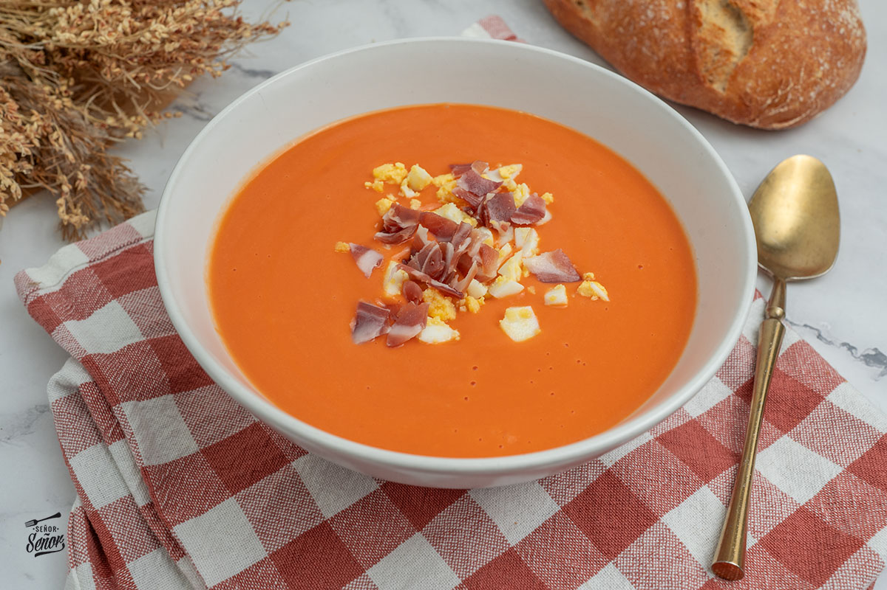

Ingredientes
- 150 ml de aceite de oliva virgen extra
- 1 Kg. de tomates rojos bien maduros
- 200 g. de pan de telera cordobesa
- 1 diente de ajo
- 10 g. de sal
Receta a seguir
- Limpiamos bien los tomates y los cortamos en cuartos, los añadimos a un bol grande y trituramos con la batidora hasta que nos quede una salsa líquida.
- Pasamos esta salsa por un colador para retirar posibles trozos de piel y pequeñas pepitas que hayan quedado al batirlos.
- Cortamos el pan en trozos pequeños y los añadimos a la crema de tomate anterior. Los dejamos reposar durante unos 10 minutos para que se ablande.
- Pelamos el ajo, le quitamos el centro para evitar que repita y lo añadimos al tomate con el pan. Agregamos el aceite de oliva virgen extra y la sal. Batimos todo hasta que nos quede lo más fino posible.
- Sólo nos queda meter el bol en la nevera y dejar que se enfríe durante un par de horas.
- A la hora de la presentación, lo mejor es ponerlo en un plato hondo o cuenco. Espolvoreamos con unas virutas de jamón serrano o ibérico.